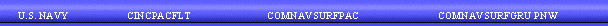

USS SACRAMENTO (AOE-1) is the third ship of the fleet to bear the name. She is a fast combat support ship, performing the functions of three logistics support ships: fleet oiler (AO), Ammunition ship (AE), and refrigerated-stores ship (AF). The USS Sacramento is homeported in Bremerton, Washington, at the Naval Station Bremerton. Click here to read more about SACRAMENTO's history.
Links to other Navy Sites:
